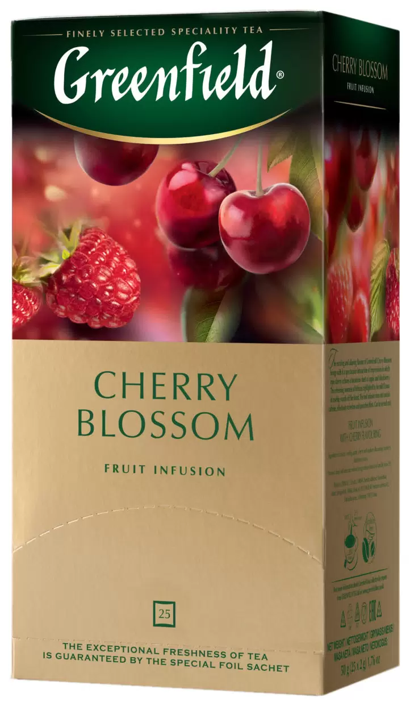
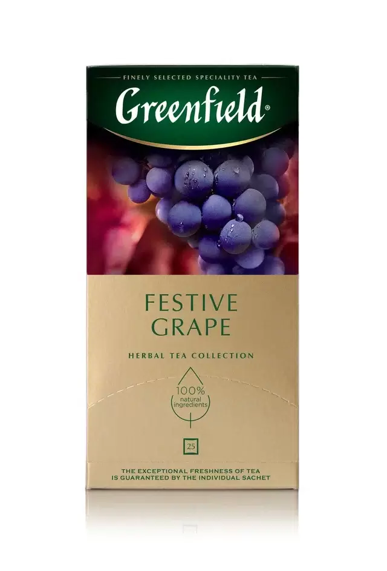
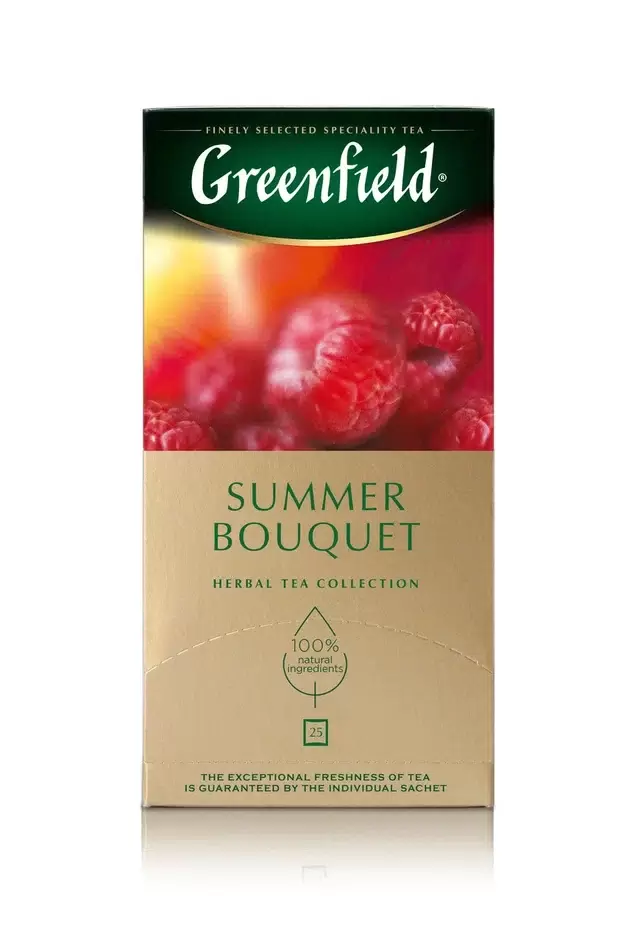
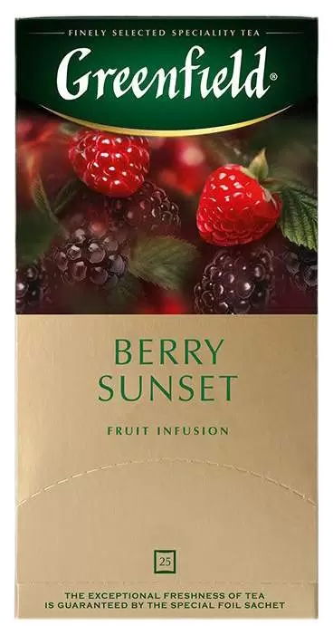
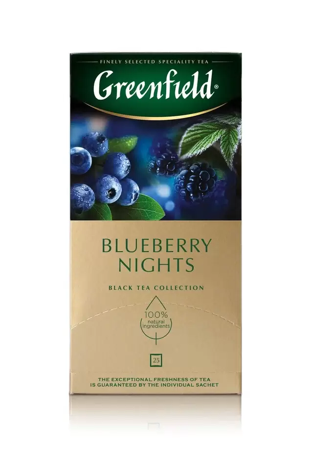
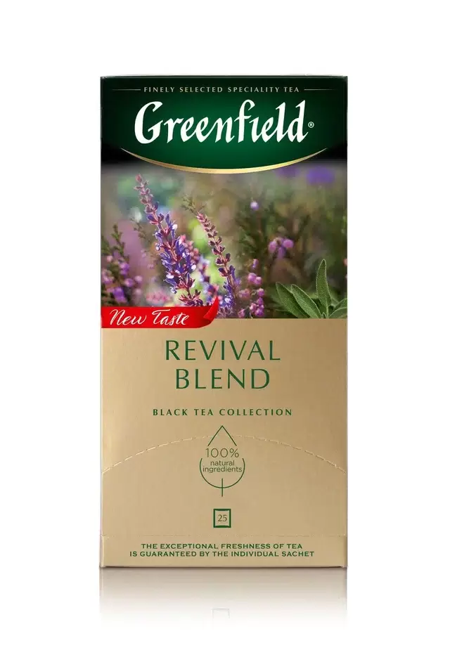
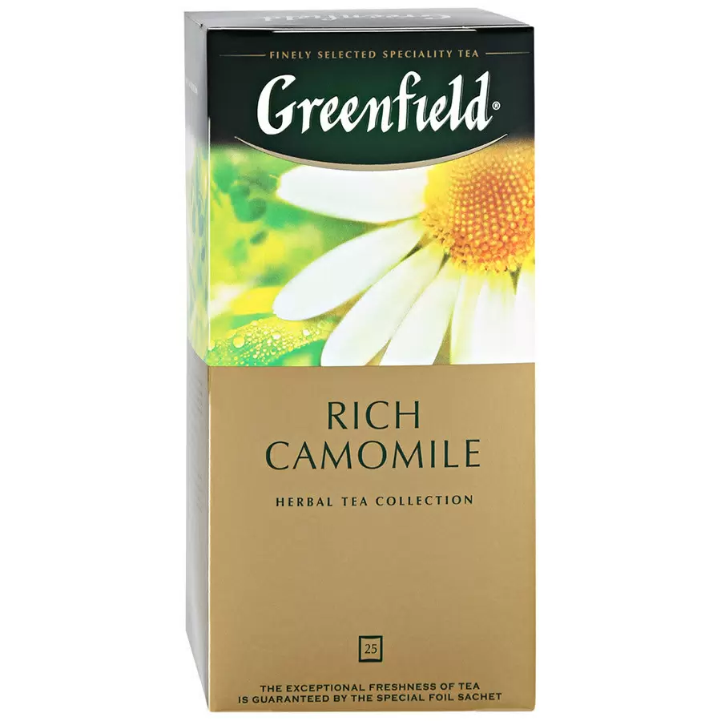
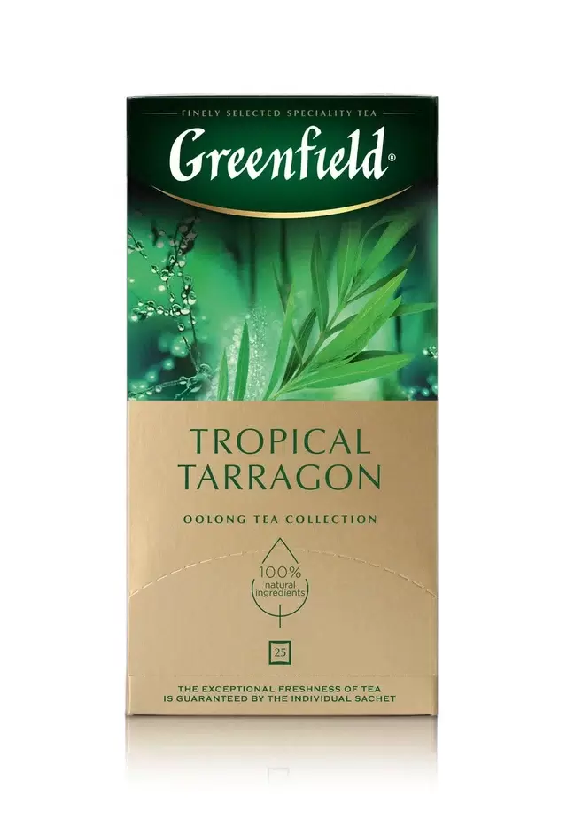
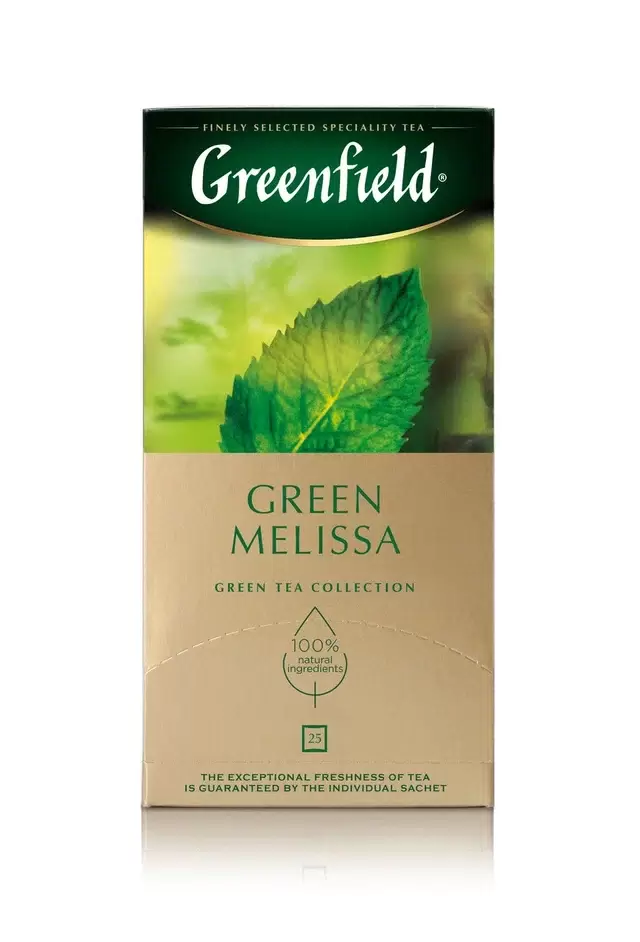

Greenfield. Cherry Blossom

гибискус, плоды шиповника,
яблоко сушеное, ароматизатор малина, листья ежевики,
измельченные ягоды малины, ароматизатор вишня
Greenfield. Festive Grape

гибискус, измельченные плоды шиповника,
яблоко сушеное, ароматизатор «виноград», лист винограда
Greenfield. Summer Bouqet

гибискус, измельченные плоды шиповника, яблоко сушеное,
ароматизатор «малина», измельченные ягоды малины
Greenfield. Berry Sunset

гибискус, яблоко сушеное, измельченные плоды шиповника,
ароматизатор черника, ароматизатор малина,
листья ежевики, измельченные ягоды ежевики
Greenfield. Blueberry Night

чай черный байховый, гибискус,
ароматизатор «черника и ежевика», лист черной смородины,
измельченные ягоды черники, лепестки мальвы
Greenfield. Revival Blend

Чай черный, листья эвкалипта,
листья ежевики, листья шалфея, гибискус, гвоздика.
Greenfield. Rich Camomile

цветки ромашки, корица, яблоко сушеное,
ароматизатор "яблоко-корица"
Greenfield. Tropical Tarragon

Нежный сливочный оттенок чая матча
и тропическая сочность спелого ананаса
создают основу.
Greenfield. Green Melissa

чай зеленый байховый,
листья мелиссы и мяты, ароматизатор «лимон